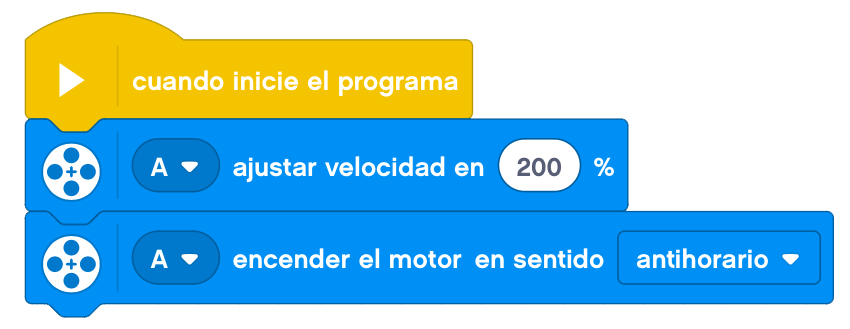

El proyecto de hoy se trata de montar un objeto que se mueva por vibración.
Nuestro robot debe de ser capaz de, a través de la vibración, moverse sobre la mesa.
Para ello, colocaremos un motor y alargaremos mediante engranajes la zona de movimiento. Eso provocará una
vibración en el robot que hará que se mueva.
A continuación, mostraremos un ejemplo de construcción de un robot que se mueve por vibración.
Le añadimos el cableado y nos debería de quedar el montaje terminado.
A la hora de programarlo, simplemente lo pondremos en marcha al 100% de velocidad.

Nuestro proyecto terminado funcionaría de la siguiente forma.